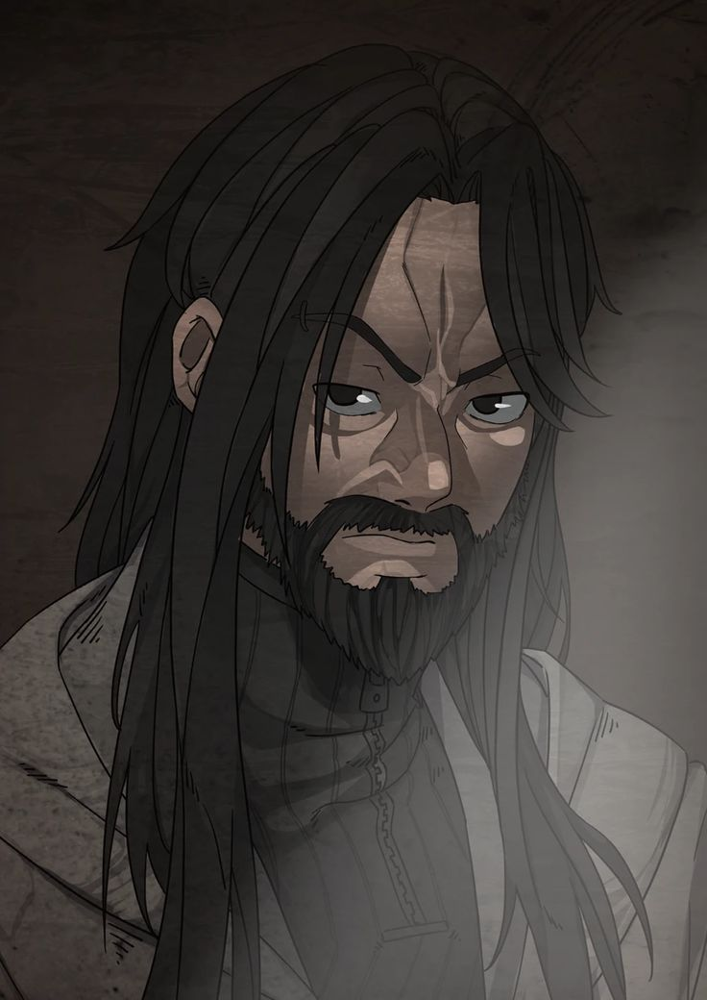
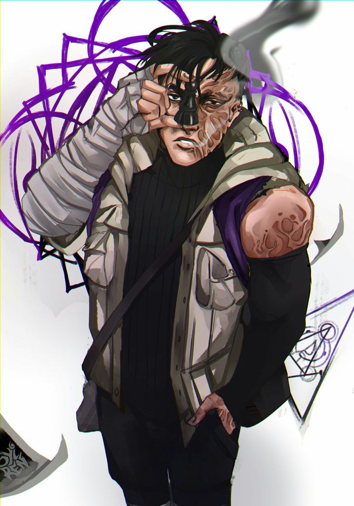

The Angel Of The Night

Cesar "Kaiser" Oliveira Cohen foi um dos protagonistas da série Ordem Paranormal, presente em O Segredo na Floresta e Desconjuração.
Cesar era um programador e hacker brasileiro, residente de São Paulo. Após se juntar à Ordo Realitas, é um dos membros designados ao Caso de Carpazinha. Seu pai, Cristopher, também se revela um membro da Ordem e o acompanha na missão.
Retornou como protagonista em Ordem Paranormal: Desconjuração, assumindo para si um novo alter ego: Kaiser. Segundo ele, esse nome é utilizado para fugir de si mesmo e parar de criar relações com outras pessoas, por medo de perdê-las. Após a entrada de seu melhor amigo Joui Jouki na Seita das Máscaras, é confiado ao hacker o cargo de líder da Força D, equipe esta que o mesmo nomeou.
Kaiser deixou de existir durante o dia final da Desconjuração, após confrontar Kian e ser alvo de um Ritual de Inexistir realizado pelo Escripta.
"CALA A BOCAAAAAAAAA CINERARIAAAA"
César "Kaiser" Oliveira Cohen

para mais informações sobre César "Kaiser" Oliveira Cohen Clique aqui